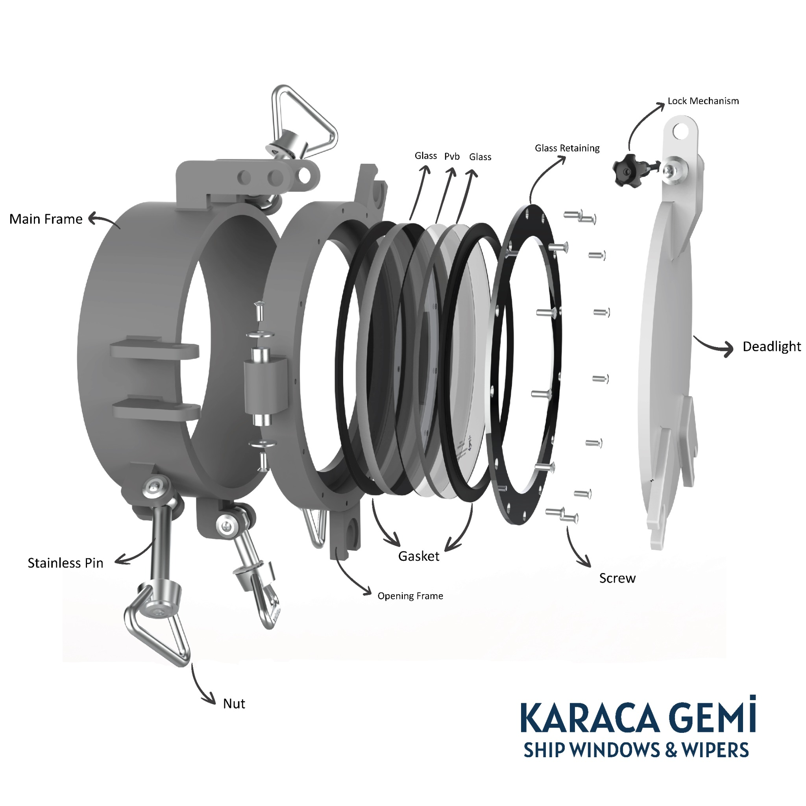

Fixed Side Scuttle with Deadlight
This sample demonstrates Karaca’s capability to manufacture compact, watertight side scuttles with deadlight protection, custom glazing and project-specific frame materials.
Interactive 3D + AR view · Rotate, zoom or view in AR on supported devices
What this sample shows
A compact demonstration of Karaca’s side scuttle production capability: frame design, sealing arrangement, glass retaining, deadlight protection and material flexibility.
Designed for marine conditions
Karaca fixed side scuttles are developed for vessel applications where durability, watertight integrity and reliable onboard service are required.
Project-specific configuration
The same product family can be adapted with different frame materials, glass types, installation methods and surface finishes according to the project.
Available options
Final configuration depends on vessel type, installation area and class/project requirements.
Visual references
Supporting visuals help communicate the product structure, configuration range and overall design language in a clear and professional way.


Video preview
A short animation can help visitors understand the product form and overall appearance more quickly than static visuals alone.
Datasheets
Download Karaca’s general ship windows and wipers catalog. Product-specific performance reports can also be added here when available.